Transformer综述
Transformer综述
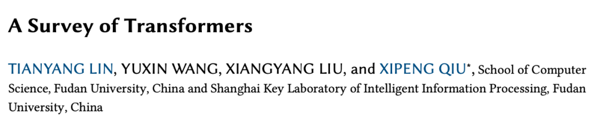
- 论文标题： A Survey of Transformers
- 论文链接： https://arxiv.org/abs/2106.04554
Transformer 在自然语言处理、计算机视觉、音频处理等许多人工智能领域都取得了巨大的成功，也吸引了学术界和行业研究人员的大量兴趣。到目前为止，已经有各种各样的 Transformer 变体（又名 X-former）被提出，但是，关于这些 Transformer 变体的系统而全面的文献综述仍然缺失。这篇综述对各种 X-former 进行了全面介绍**。**
这篇综述首先简要介绍了原版 Transformer，然后提出了一种新的 X-former 分类法。接着从架构修改、预训练、应用三个角度介绍各种 X-former。最后，概述了未来研究的一些潜在方向。
1.引言
Transformer 最初是作为机器翻译的 Seq2Seq 模型提出的。后来的工作表明，基于 Transformer 的预训练模型 (PTM) 可以在各种任务上实现 SOTA。因此，Transformer，特别是 PTM，已成为 NLP 中的首选架构。除了语言相关的应用，Transformer 还被 CV，音频处理甚至其他学科采用。在过去几年中提出了各种 Transformer 变体（又名** X-former**），这些 X-former 也从不同的角度改进了原版 Transformer。
- 模型效率。应用 Transformer 的一个关键挑战是其处理长序列的效率较低，这主要是由于 self-attention 的计算和内存复杂性。改进方法包括轻量化注意力模块（例如稀疏注意力）和分而治之的方法（例如循环和分层机制）。
- 模型泛化。由于 Transformer 是一种灵活的架构，并且对输入数据的结构偏差几乎没有假设，因此很难在小规模数据上进行训练。改进方法包括引入结构偏差或正则化，对大规模未标记数据进行预训练等。
- 模型适配。这一系列工作旨在使 Transformer 适应特定的下游任务和应用程序。
在这篇综述中，旨在全面回顾 Transformer 及其变体。虽然我们可以根据上述观点来分类 X-former，但许多现有的 X-former 可能会解决一个或几个问题。例如，稀疏注意力不仅降低了计算复杂度，而且在输入数据上引入了结构先验以缓解小数据集上的过拟合问题。因此，对现有的各种 X-former 进行分类，并主要根据它们改进原版 Transformer 的方式提出新的分类法：架构修改、预训练和应用。
1.1 原版 Transformer
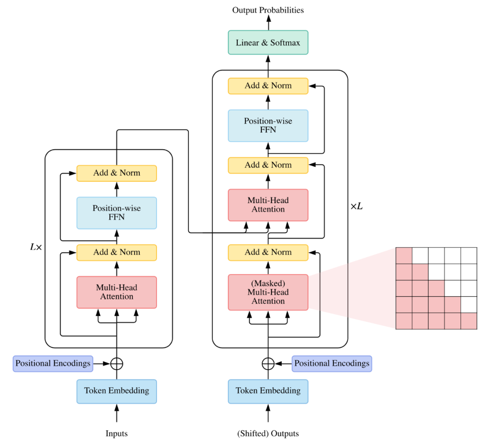
1.2 Transformer 分类
迄今为止，已经从三个角度提出了基于原版 Transformer 的各种模型：架构修改类型、预训练方法和应用程序。如图：
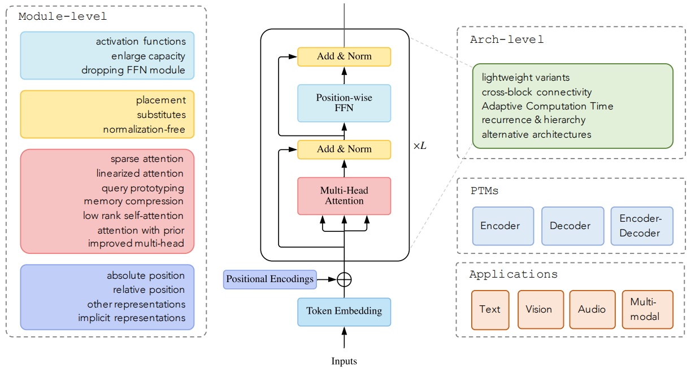
详细的 Transformer 分类如下图：
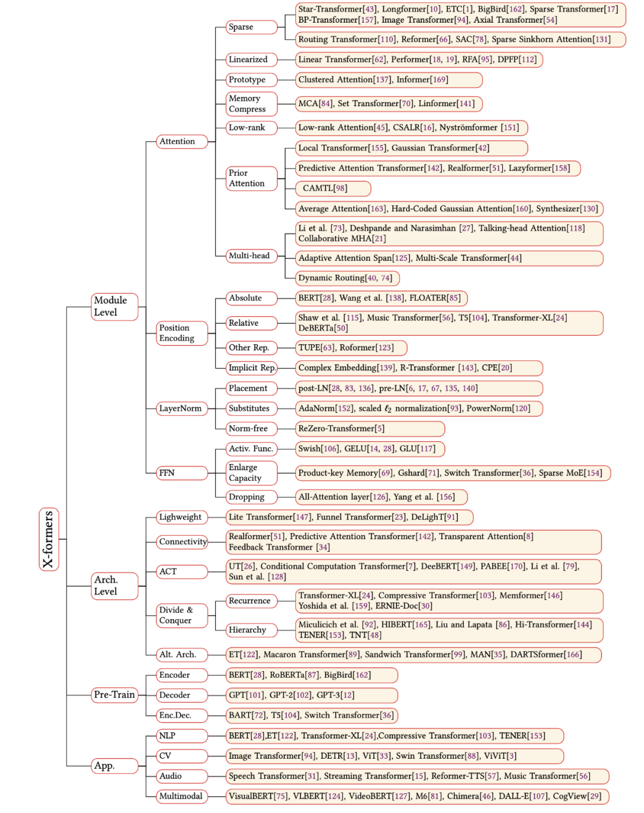
2.模型层面
2.1 注意力机制
Self-attention 在 Transformer 中扮演着重要的角色，但在实际应用中存在两个挑战。
- 复杂性。self-attention 的复杂度是 $O\left(T^{2} \cdot D\right)$ 。因此，在处理长序列时 Attention 模块会成为瓶颈。
- 结构先验。Self-attention 不假设对输入有任何结构性偏见。甚至顺序信息也需要从训练数据中学习。因此，无预训练的 Transformer 通常很容易在小型或中等规模的数据上过拟合。
Attention 机制的改进可以分为几个方向：
- 稀疏注意力。这一系列工作将稀疏偏差引入 Attention 机制，从而降低了复杂性。
- 线性化注意力。这一系列工作将注意力矩阵与核特征图分解，然后以相反的顺序计算注意力以实现线性复杂度。
- 原型和内存压缩。这类方法减少了查询或键值记忆对的数量，以减少注意力矩阵的大小。
- 低秩的自注意力。这一系列工作捕获了 Self-attention 的低秩属性。
- 先验注意力。该研究领域探索用先验的注意力分布来补充或替代标准注意力。
- 改进的多头机制。这一系列工作探索了多个不同的多头（Multi-head）机制。
（1）Sparse Attention 稀疏注意力
在标准的自注意力机制中，每个 token 都需要关注所有其他 token。然而，据观察，对于经过训练的 Transformer，学习到的注意力矩阵 A 在大多数数据点上通常非常稀疏。因此，可以通过结合结构偏差来限制每个查询关注的查询键对的数量来降低计算复杂度。
从另一个角度来看，标准注意力可以被视为一个完整的二分图，其中每个查询从所有内存节点接收信息并更新其表示。稀疏注意力可以被认为是一个稀疏图，其中删除了节点之间的一些连接。基于确定稀疏连接的指标，我们将这些方法分为两类：基于位置的稀疏注意力和基于内容的稀疏注意力。
1）基于位置的稀疏注意力
在基于位置的稀疏注意力中，注意力矩阵根据一些预定义的模式受到限制。虽然这些稀疏模式以不同的形式变化，但我们发现其中一些可以分解为一些原子稀疏模式。
1、原子稀疏注意力：全局注意力（Global）、带状注意力（Band）、扩张注意力（Dilated）、随机注意力（Random）、块局部注意力（Block Local）；
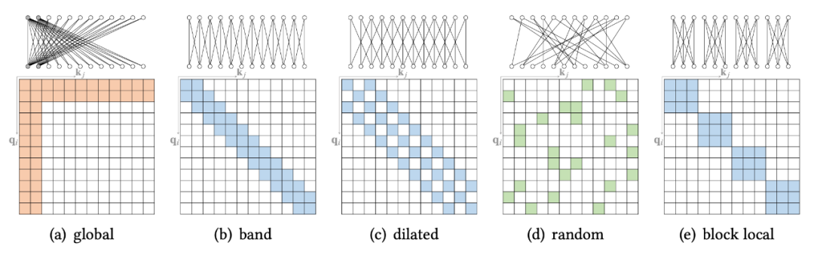
2、复合稀疏注意力：现有的稀疏注意力通常由以上原子模式中的一种以上组成。 如图：
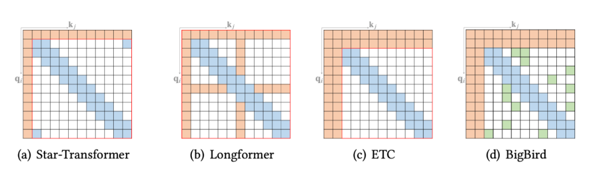
3、拓展稀疏注意力：除了上述模式，一些现有的研究探索了特定数据类型的扩展稀疏模式。对于文本数据，有 BP-Transformer；还有一些视觉数据的扩展，如 Image Transformer 和 Axial Transformer。如图：
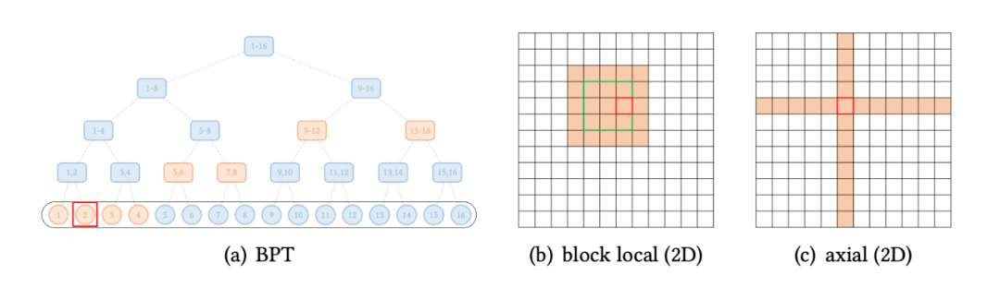
2）基于内容的稀疏注意力
另一行工作基于输入内容创建稀疏图，即稀疏连接以输入为条件。构建基于内容的稀疏图的一种直接方法是选择那些可能与给定查询具有较大相似性分数的键。为了有效地构建稀疏图，我们可以递归到最大内积搜索 (MIPS) 问题，即尝试通过查询找到具有最大点积的键，而无需计算所有点积项。
（2）线性注意力
线性化注意力是一类用 $\phi(Q) \phi(K)^{\top}$近似或替换非标准化注意力矩阵 $\exp \left(Q K^{\top}\right)$ 的方法，其中 是按行方式应用的特征图。 因此，非归一化注意力矩阵的计算可以通过计算 $\phi(Q)\left(\phi(K)^{\top} V\right)$来线性化，如图：
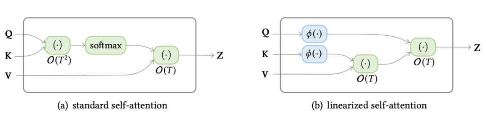
该模型通过聚合（由特征映射的）键和值的外积表示的关联来维护内存矩阵，然后通过将内存矩阵与具有适当归一化的特征映射查询相乘来检索值。 这种方法有两个关键组件：1）特征图 ；2）聚合规则。
（3） 查询原型和内存压缩
除了使用稀疏注意力或基于内核的线性注意力之外，还可以通过减少查询或键值对的数量来降低注意力的复杂性，这分别产生了查询原型和内存压缩方法。
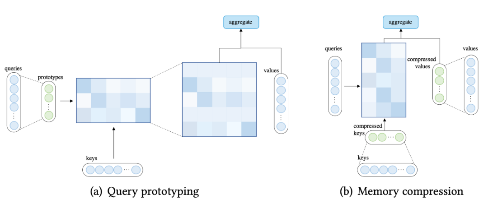
使用原型查询的注意力**：** 在查询原型设计中，几个查询原型作为计算注意力分布的主要来源。该模型要么将分布复制到表示的查询的位置，要么用离散的均匀分布填充这些位置。
压缩键值内存的注意力**：** 可以通过在应用注意力机制之前减少键值对的数量来降低复杂性。
（4）低秩的自注意力
一些经验和理论分析报告称，自注意力矩阵通常是低秩的。这个属性的含义是双重的：1）低秩属性可以用参数化显式建模；2) 可以用低秩近似代替自注意力矩阵。
（5）先验的注意力
注意力机制通常将预期的注意力值输出为向量的加权和，其中权重是值上的注意力分布。传统上，分布是从输入生成的（例如，原版 Transformer 中的 ）。
作为一般情况，注意力分布也可以来自其他来源，我们称之为先验的。预先注意分布可以补充或替代输入产生的分布。我们将注意力的这种表述抽象为具有先验的注意力，如图所示。在大多数情况下，两个注意力分布的融合可以通过在应用 softmax 之前计算对应于先验注意力和生成注意力的分数的加权和来完成。
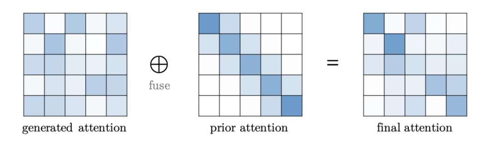
模型位置先验**：** 某些类型的数据（例如，文本）可以表现出对位置的强烈偏好。此属性可以显式编码为先验注意力。
从下层模块先验**：** 在 Transformer 架构中，经常观察到相邻层的注意力分布相似。因此，很自然地将前一层的注意力分布作为注意力计算的先验。
多任务适配器先验**：** 适配器是依赖于任务的训练模块，它们附加在预训练网络的特定位置，用于跨任务高效参数共享。
仅注意力先验**：** 一些工作探索了使用独立于输入之间成对交互的注意力分布。 换句话说，他们的模型只利用了先验注意力分布。
（6）改进的多头机制
多头（Multi-head）注意力的吸引力在于能够共同关注来自不同位置的不同表示子空间的信息。然而，没有机制可以保证不同的注意力头确实捕捉到不同的特征。
头部行为建模**：** 使用多头注意力的一个基本动机是允许模型共同关注来自不同位置的不同表示子空间的信息。然而，在 原版 Transformer 中，没有明确的机制来保证注意力头之间的不同行为，也没有任何机制让头相互交互。有 一系列工作致力于通过引入更复杂的机制来改进多头机制，这些机制指导不同注意力头的行为或允许跨注意力头的交互。
跨度受限的多头**：** 原版注意力采用完全注意力跨度假设，其中查询可以关注所有键值对。然而，经常观察到，一些头主要将注意力集中在局部环境中，而其他一些头则关注更广泛的环境。因此，限制注意力范围可能对于局部性和效率方面都有益处。
精细聚合的多头**：** 在每个注意力头计算其输出表示后，原版多头注意力将这些表示连接起来，然后对连接后的表示应用线性变换以获得最终的输出表示。有人可能会争辩说，这种简单的逐个聚合范式并没有充分利用多头注意力的表现力，而使用更复杂的聚合更为可取。因此有人提出了使用为胶囊网络设计的路由方法，注意力头的输出首先转化为输入胶囊，然后经过迭代路由过程得到输出胶囊。然后将输出胶囊连接起来作为多头注意力的最终输出。
2.2 位置表示
很容易验证卷积和循环网络不是置换等变的。然而，Transformer 中的自注意力模块和位置前馈层都是置换等变的，这可能在建模时成为一个问题，而不是需要输入结构的集合输入问题。例如，在对文本序列建模时，单词的顺序很重要，因此在 Transformer 架构中正确编码单词的位置至关重要。因此，需要额外的机制将位置信息注入到 Transformer 中。一种常见的设计是首先使用向量表示位置信息，然后将向量作为附加输入注入模型。
（1）绝对位置表示
在原版 Transformer 中，位置信息被编码为绝对正弦位置编码。对于每个位置索引，编码是一个向量，其中每个元素都是一个正弦函数，具有预定义频率的索引。
另一种表示绝对位置的方法是为每个位置学习一组位置嵌入。与手工制作的位置表示相比，学习嵌入更加灵活，因为位置表示可以通过反向传播适应任务。但是嵌入的数量被限制在训练前确定的最大序列长度，这使得这种方法不再具有归纳性，即无法处理比训练时看到的序列更长的序列。
（2）相对位置表示
另一系列工作侧重于表示 token 之间的位置关系，而不是单个 token 的位置。直觉认为，在自注意力中输入元素（方向和距离）之间的成对位置关系可能比元素的位置更有益。遵循这一原则的方法称为相对位置表示。
（3）其他表示
一些研究已经探索使用包含绝对和相对位置信息的混合位置表示。Transformer with Untied Position Encoding (TUPE) 将注意力分数的计算重新设计为内容到内容项、绝对位置到位置项和表示相对位置关系的偏置项的组合。
（4）没有显式编码的位置表示
Wang 等人没有明确引入额外的位置编码，建议通过将嵌入推广到位置上的连续（复值）函数来对词嵌入中的位置信息进行编码。
（5）Transformer decoder 的位置表示
值得注意的是，mask的self-attention不是置换等变的。因此，仅利用 Transformer 解码器的模型具有在不包含显式位置表示的情况下感知位置信息的潜力。语言建模任务的一些实证结果证实了这一点，作者发现删除位置编码甚至可以提高性能。
2.3 层归一化
层归一化（Layer Normalization, LN）以及残差连接被认为是一种稳定深度网络训练的机制（例如，减轻不适定梯度和模型退化）。 有一些工作可以分析和改进 LN 模块。
（1）LN 的位置
在原版 Transformer 中，LN 层位于残差块之间，称为 post-LN。 后来的 Transformer 实现将 LN 层放在注意力或 FFN 之前的残差连接内，在最后一层之后有一个额外的 LN 来控制最终输出的大小，这被称为 pre-LN。Pre-LN 已被许多后续研究和实现所采用，区别如图所示。
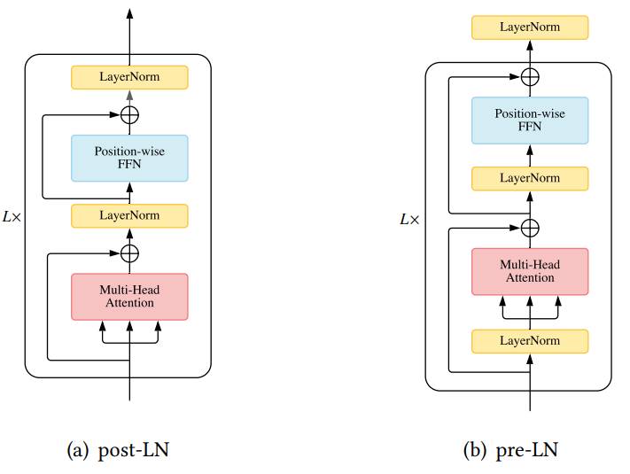
（2）LN 的替代
徐等人凭经验观察到LN模块中的可学习参数在大多数实验中不起作用，甚至增加了过度拟合的风险。他们从受控实验中进一步得出结论，正向归一化不是 LN 适用于 Transformer 的原因。从分析和实验中可以得出结论，均值和方差的导数重新居中并重新缩放梯度，并在 LN 中发挥重要作用。因此，他们提出了 AdaNorm，一种没有可学习参数的归一化技术。
Nguyen 和 Salazar 建议用缩放的 l2 归一化替换 LN 模块。
沈等人讨论了为什么批归一化 (Bath Normalization, BN) 在文本数据的 Transformer 中表现不佳，并得出结论，BN 的显着性能下降源于与其批量统计相关的不稳定性。因此，他们提出了对 BN 进行三个修改的 PowerNorm (PN)：1）它放宽了零均值归一化；2) 它使用信号的二次均值，而不是方差；3) 它使用二次均值的运行统计，而不是使用每批统计。
（3）无归一化的Transformer
除了 LN，还有另一种机制可以构建更深层次的神经网络。ReZero 用可学习的残差连接替换 LN 模块。验证表明用 ReZero 机制替换 Transformer 中的 LN 可以为输入信号引入更好的动态等距，并导致更快的收敛。
2.4 位置前馈网络
位置前馈网络 (FFN) 层对于 Transformer 实现良好性能很重要。董等人观察到，简单地堆叠自我注意模块会导致等级崩溃问题，导致 token 均匀性归纳偏差，而前馈层是缓解此问题的重要构建块之一。各种工作都探索了对 FFN 模块的修改。
FFN 中的激活函数**：** 原版 Transformer 采用整流线性单元 (ReLU) 激活来实现两个 FFN 层之间的非线性关系。随着时间的推移，一些研究探索了除 ReLU 之外的不同激活，比如 GELU 和 GLU。
调整 FFN 以获得更大容量**：** 有几项工作专注于扩展 FFN 以获取更大的模型容量。基本思想是用具有更多参数的类似结构替换 FFN。
删除 FFN 层**：** 值得注意的是，有人可能会争辩说，在某些情况下，可以完全删除 FFN 层，从而简化网络。
3.架构层面
3.1 使 Transformer 轻量化
除了在模块级别为减轻计算开销所做的努力之外，还有一些尝试通过更高级别的修改来使 Transformer 变得轻量级。
类似于将注意力分解为局部约束注意力和低阶全局注意力的低阶自注意力，Lite Transformer 建议将 Transformer 中的每个注意力模块替换为两个分支结构，其中一个分支使用注意力来捕获远程上下文，而另一个分支使用深度卷积和线性层来捕获局部依赖关系。该架构在模型大小和计算方面都是轻量级的，因此更适合移动设备。
Funnel Transformer 利用类似漏斗的 encoder 架构，其中隐藏序列的长度使用沿序列维度的池化逐渐减少，然后使用上采样恢复。与普通的 Transformer 编码器相比，该架构有效地减少了 FLOP 和内存。自然，人们可以使用这种架构使用相同的计算资源构建更深或更广的模型。
DeLighT 用 DeLighT 块替换了标准的 Transformer 块，该块由三个子模块组成：1）“扩展和减少”DeLightT 转换模块，以低计算要求学习更广泛的表示；2）单头自注意力学习成对交互；3）一个轻量级的“reduce-and-expand”FFN。他们还提出了一种逐块缩放策略，允许输入附近的更浅和更窄的块以及输出附近更宽和更深的块。诱导网络比普通 Transformer 深得多，但参数和操作更少。
3.2 加强跨块连接
在原版 Transformer 中，每个块都将前一个块的输出作为输入并输出一系列隐藏表示。人们可能对创建更多路径感兴趣，输入信号可以沿着这些路径通过网络。Realformer 和 Predictive Attention Transformer 重用前一个块的注意力分布来引导当前块的注意力。这可以看作是在相邻的 Transformer 块之间创建了一条前向路径。
3.3 自适应计算时间
与大多数神经模型一样，原版 Transformer 使用固定（学习过的）计算程序来处理每个输入。一个有趣且有前途的修改是使计算时间以输入为条件，即将自适应计算时间 (Adaptive Computation Time, ACT) 引入 Transformer 模型。此类修改可能会带来以下优势：
- 困难示例的特征细化。 对于难以处理的数据，浅层表示可能不足以完成手头的任务。 应用更多计算来获得更深入、更精细的表示会更理想。
- 简单示例的效率。 在处理简单的示例时，浅层表示可能足以完成任务。 在这种情况下，如果网络可以学习使用减少的计算时间来提取特征，那将是有益的。
如图所示是三种 ACT 范式：
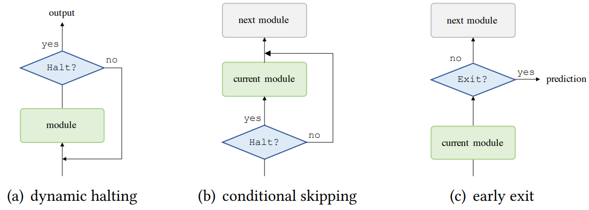
3.4 分治策略的 Transformer
序列长度上的自注意力的二次复杂度会显着限制一些下游任务的性能。例如，语言建模通常需要远程的上下文。另一种处理长序列的有效方法是使用分治策略，即将输入序列分解为可以由 Transformer 或 Transformer 模块有效处理的更细段。我们确定了两类有代表性的方法，循环和分层 Transformer，如图所示。这些技术可以被理解为 Transformer 模型的包装器，其中 Transformer 作为一个基本组件，被重用以处理不同的输入段。
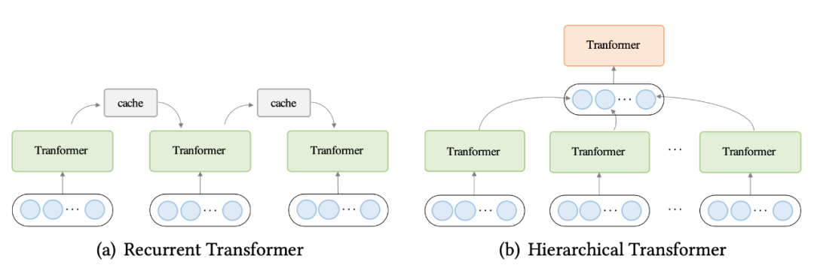
（1）循环 Transformer
在循环 Transformer 中，会维护一个缓存以合并历史信息。在处理一段文本时，网络从缓存中读取作为附加输入。处理完成后，网络通过简单地复制隐藏状态或使用更复杂的机制来写入内存。
（2）分层 Transformer
分层 Transformer 将输入分层分解为更细粒度的元素。低级特征首先被送到 Transformer 编码器，产生输出表示，然后聚合（使用池化或其他操作）以形成高级特征，然后由高级 Transformer 处理。这类方法可以理解为一个层次抽象的过程。这种方法的优点有两个：1）分层建模允许模型以有限的资源处理长输入；2）它有可能产生更丰富的对任务有益的表征。
3.5 探索替代架构
尽管 Transformer 架构取得了成功，但人们可能会质疑当前的 Transformer 架构是否是最佳的。有趣的是，有几项研究探索了 Transformer 的替代架构。
卢等人将 Transformer 解释为多粒子动态系统中对流扩散方程的数值常微分方程 (Ordinary Differential Equation, ODE) 求解器，并设计 Macaron Transformer，它将每个 Transformer 块替换为 FFN-attention-FFN 变体。
Sandwich Transformer 探索重组注意力模块和 FFN 模块，使得注意力模块主要位于较低层，FFN 模块主要位于较高层。诱导模型在不增加参数、内存或训练时间的情况下，改善了多语言建模基准的困惑度。
掩码注意网络 (Mask Attention Network, MAN) 在每个 Transformer 块中的自注意模块之前添加了一个动态掩码注意模块。掩码以标记表示、标记和头部索引之间的相对距离为条件。所提出的动态掩码注意力被证明可以有效地对文本数据中的局部性进行建模，并且诱导模型在机器翻译和抽象摘要中始终优于Baseline模型。
值得注意的是，有一系列工作使用神经架构搜索 (NAS) 来搜索替代 Transformer 架构。Evolved Transformer (ET) 采用基于进化的架构搜索，标准的 Transformer 架构为初始群体提供种子。搜索到的模型在多个语言任务上表现出对 Transformer 的持续改进。作为另一项代表性工作，DARTSformer 应用可微架构搜索（DARTS），结合多分裂可逆网络和反向传播重建算法以提高内存效率。由此产生的模型始终优于标准 Transformer，并且与更大的 ET 模型相比具有优势，并且搜索成本显着降低。
4.预训练 Transformer
作为与卷积网络和循环网络的一个关键区别，Transformer 不对数据的结构做出任何假设。一方面，这有效地使 Transformer 成为一种非常通用的架构，具有捕获不同范围依赖关系的潜力。另一方面，这使得 Transformer 在数据有限时容易过拟合。缓解此问题的一种方法是在模型中引入归纳偏置。
最近的研究表明，在大型语料库上预训练的 Transformer 模型可以学习对下游任务有益的通用语言表示。这些模型是使用各种自监督的目标进行预训练的，例如，根据上下文预测掩码。在对模型进行预训练后，可以简单地在下游数据集上对其进行微调，而不是从头开始训练模型。为了说明在预训练中使用 Transformers 的典型方法，我们确定了一些预训练的 Transformer 并将它们分类如下：
- 仅 Encoder。一系列工作使用 Transformer Encoder 作为其主干架构。BERT是典型的 PTM，通常用于自然语言理解任务。它利用掩码语言建模 (MLM) 和下一句预测 (NSP) 作为自监督训练目标。RoBERTa 进一步调整了 BERT 的训练并删除了 NSP 目标，因为 NSP 被发现会损害下游任务的性能。
- 仅 Decoder。一些研究侧重于对语言建模的 Transformer 解码器进行预训练。例如，生成式预训练 Transformer (GPT) 系列（即 GPT 、GPT-2 和 GPT-3 ）专门用于缩放预训练的 Transformer 解码器，并且最近说明了大规模 PTM 可以通过将任务和示例作为构造提示输入模型来在低资源场景下实现不错的功能。
- Encoder-Decodr。也有采用 Transformer Encodr-Decoder 作为整体架构的 PTM。BART 将 BERT 的去噪目标扩展到 Encoder-Decoder架构。使用 Encoder-Decoder 架构的好处是，诱导模型具备执行自然语言理解和生成的能力。**T5 **采用类似的架构，是最早在下游任务中使用特定于任务的文本前缀的研究之一。
一些 Transformer 架构变体也可以应用于基于 Transformer 的 PTM。例如， BigBird 就是一个基于编码器的 PTM，它使用基于复合位置的稀疏注意力来启用长序列输入。GPT-3 在自注意力模块中使用交替的密集和局部带状稀疏注意力。Switch Transformer 是一种基于 Encoder 的 PTM，它用混合专家层替换了 FFN 层，并且可以增加参数数量，同时保持每个示例的 FLOPs 不变。
5.Transformer的应用
Transformer 最初是为机器翻译而设计的，但由于其灵活的架构，已被广泛应用于 NLP 之外的各个领域，包括 CV 和音频处理。
- 自然语言处理。Transformer 及其变体已在 NLP 任务中得到广泛探索和应用，例如机器翻译、语言建模和命名实体识别。大量的努力致力于在大规模文本语料库上预训练 Transformer 模型，我们认为这是 Transformer 在 NLP 中广泛应用的主要原因之一。
- 计算机视觉。Transformer 还适用于各种视觉任务，例如图像分类、物体检测、图像生成和视频处理。
- 音频应用。Transformer 还可以扩展到与音频相关的应用，例如语音识别，语音合成，语音增强和音乐生成 。
- 多模态应用。由于其灵活的架构，Transformer 还被应用于各种多模态场景，例如视觉问答、视觉常识推理、字幕生成、语音到文本翻译和文本到图像生成。
6.总结和未来方向
在这篇综述中，我们对 X-former 进行了全面概述，并提出了一个新的分类法。现有的大部分工作都是从不同的角度对 Transformer 进行改进，例如效率、泛化和应用。改进包括结合结构先验、设计轻量级架构、预训练等。
尽管 X-former 已经证明了它们在各种任务中的能力，但挑战仍然存在。除了当前的关注点（例如效率和泛化）之外，Transformer 的进一步改进可能在于以下几个方向：
- 理论分析。Transformer 的架构已被证明能够支持具有足够参数的大规模训练数据集。许多工作表明，Transformer 具有比 CNN 和 RNN 更大的容量，因此具有处理大量训练数据的能力。当 Transformer 在足够的数据上进行训练时，它通常比 CNN 或 RNN 具有更好的性能。一个直观的解释是 Transformer 对数据结构的先验假设很少，因此比 CNN 和 RNN 更灵活。然而，理论原因尚不清楚，我们需要对Transformer能力进行一些理论分析。
- 超越注意力的更好的全局交互机制。Transformer 的一个主要优点是使用注意力机制来模拟输入数据中节点之间的全局依赖关系。然而，许多研究表明，对于大多数节点来说，完全注意是不必要的。在某种程度上，无法区分地计算所有节点的注意力是低效的。因此，在有效地对全局交互进行建模方面仍有很大的改进空间。一方面，self-attention 模块可以看作是一个具有动态连接权重的全连接神经网络，它通过动态路由聚合非局部信息。因此，其他动态路由机制是值得探索的替代方法。另一方面，全局交互也可以由其他类型的神经网络建模，例如记忆增强模型。
- 多模态数据统一框架。在许多应用场景中，集成多模态数据对于提高任务性能是有用且必要的。此外，通用人工智能还需要能够捕捉不同模态之间的语义关系。由于 Transformer 在文本、图像、视频和音频方面取得了巨大成功，我们有机会构建一个统一的框架，更好地捕捉多模态数据之间的内在联系。然而，模内和跨模态注意力的设计仍有待改进。
最后，我们希望这篇综述成为一个参考，以更好地了解 Transformer 的当前研究进展，并帮助读者进一步改进 Transformer 的各种应用。